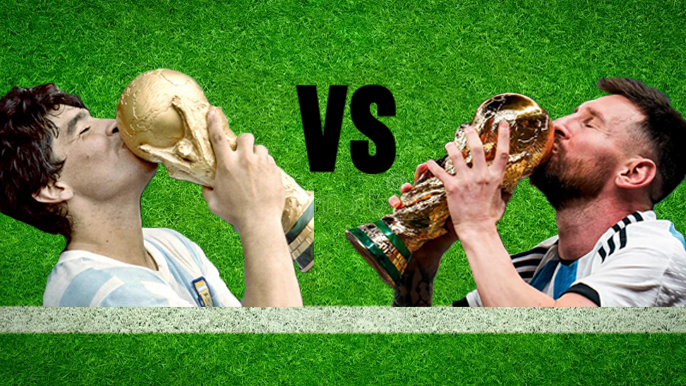

Jugadores
Lionel Messi vs. Diego Maradona
Una reflexión profunda sobre el impacto de ambos genios en la albiceleste, contexto histórico y momentos clave.

Fútbol y Mate es mi rincón futbolero, un blog 100% hecho por mí, donde comparto todo lo que me apasiona del fútbol: curiosidades, historias, jugadores que me marcaron, equipos inolvidables y competiciones de todo el mundo. Cada post es mi opinión, mi forma de ver el fútbol, escrita con mate en mano y mucho amor por este deporte. No vas a encontrar noticias copiadas ni análisis fríos: acá se habla de fútbol como en la mesa con amigos, con emoción, humor y sin filtro.
Una reflexión profunda sobre el impacto de ambos genios en la albiceleste, contexto histórico y momentos clave.

Repasamos por qué la edición alemana reunió el mejor nivel colectivo e individual de las últimas décadas.
Con menos marketing pero más identidad futbolística, historia y jugadores, demuestra que puede ser más grande sin necesidad de vender humo.

A lo largo de los años vimos tridentes inolvidables:cada uno con su estilo, impacto y un legado que marcaron épocas distintas tanto que encendieron el debate sobre cuál fue el mejor.
Rogerio Ceni, el arquero más goleador de la historia
En 2006, el brasileño superó los 62 tantos de José Luis Chilavert y el 27 de marzo de 2011 llegó al centenar de festejos, hito único hasta el momento. Alcanzó en total los 132.